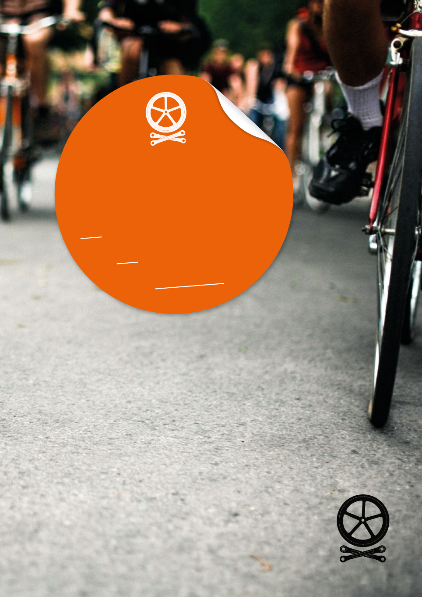

For kicks. For adventure. For the soul.
The reasons we ride are as varied as the placeswe ride
through. Thousands of miles arecovered in the next hundred
pages: our brave writers journey underground and back in
time,through America, across the Balkans, over the Alps
andthe Himalayas and on around the world. Twice. But
for allthese vast distances, the greatest journey they each
makeisin the mind, as the wheels spin, theheart expands
andthe self unwindstoa distant horizon...
Welcome to issue #15
BS15-PAGES-3P.indd 111/09/2014 16:13
Boneshaker: Real Cycling
Except this isn’t real, of course, it’s digital. To
get your hands on a real Boneshaker, to feel
it and smell it and hide it in your pannier, go
here. We make other great bike stuff too,
especially bicycle art prints. Check them
out
here. And to let your ears take
your mind on a journey, there’s our
new podcast series
.